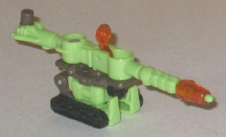
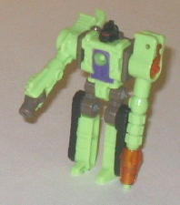
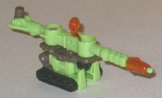
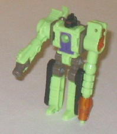
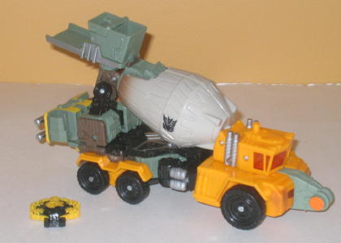
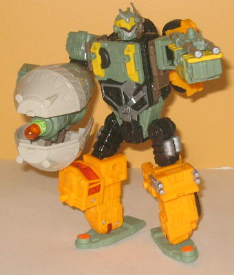

 
Allegiance : Decepticon
Size : Mini-Con
Difficulty of Transformation : Easy
Color Scheme : Light pale green, dull gray, and some transparent orange, black, dark red, and dark purple
Individual Rating : 6.8
(NOTE: Because this set is a repaint, this
is not a full-blown review. This mainly covers any changes made to the
set and the color scheme, and merely compares it to Cybertron Quickmix
w/ Stripmine. For a review on the mold itself, read the review of Cybertron
Quickmix w/ Stripmine
here
.)
 Drill
Bit
Drill
Bit


Allegiance
: Decepticon
Size
: Mini-Con
Difficulty of Transformation
: Easy
Color Scheme
: Light pale green,
dull gray, and some transparent orange, black, dark red, and dark purple
Individual Rating
: 6.8
Drill Bit is a rather
odd recolor, being a light green drilling machine. Don't think I've ever
seen one of those before. (It makes slightly--
slightly-
- more sense
than his predecessor Stripmine's color scheme, though.) Regardless, it's
not that bad of a color scheme overall-- the gray serves as a decent secondary
color, though I would have preferred if the purple coloration on Drill
Bit's chest was more prominent. The only color choice I really don't like
is the transparent orange (more of a side effect of his mold-sharing with
Heavy Load than anything else)-- it just doesn't look all that great against
the light green.
No mold changes have
been made to Universe 2.0 Drill Bit.
 Decepticon
Heavy Load
Decepticon
Heavy Load


Allegiance
: Decepticon
Size
: Voyager
Series
: Classic/Generation One
Difficulty of Transformation
: Medium
Color Scheme
: Black, "cheese" yellow,
dull pale green, pale light tan, and some transparent orange, light pale
green, transparent orange, silver, bright orange, dull yellow, dull gray,
pale light gray, and dark muddy brown
Individual Rating
: 7.7
Heavy Load's color scheme
is a bit construction-inspired, what with the very construction-y shade
of yellow used on many of his vehicle mode parts and the black that's also
used as a primary color. What I don't get is all the dull pale green that's
used, though, which is particularly visible in robot mode. I wouldn't say
it outright clashes with the yellow, but it comes close and is generally
just an unpleasant shade of green. If one of these colors or the other
had been used as the primary color on Heavy Load, I would have been fine
with it, but using both of them together makes for a not-so-great combination.
On the plus side, though Heavy Load has plenty of paint apps, particularly
on his robot mode parts-- his chest in particular has a lot of detailing
on it. I like the fairly complicated, asymmetrical silver pattern on his
waist. The silver used also makes for a decent contrast color as well as
the dull gray that is prominently used for "connector" parts. The dots
of "safety orange" also work well on a construction vehicle, being used
in just a few places as it is, and is actually a pretty good contrasting
color against the green. Another paint app I like in particular is the
muddy brown "fade" on the rear end of the cement drum-- makes it look like
Heavy Load's gotten himself dirty haulin' himself around. (Not sure why
he has the MOVIE Decepticon symbol on his cement drum as opposed to the
original one, though.)
No mold changes have
been made to Universe 2.0 Heavy Load.
Universe 2.0 Heavy Load is probably one of the repaints from the line that I'd most recommend skipping, as the color scheme seems rather mish-mashy and random and the mold isn't the best, either. He's not outright bad, but there's plenty of Universe 2.0 toys that deserve your dollar more than this guy and his brightly-colored Minicon partner.
Review by Beastbot